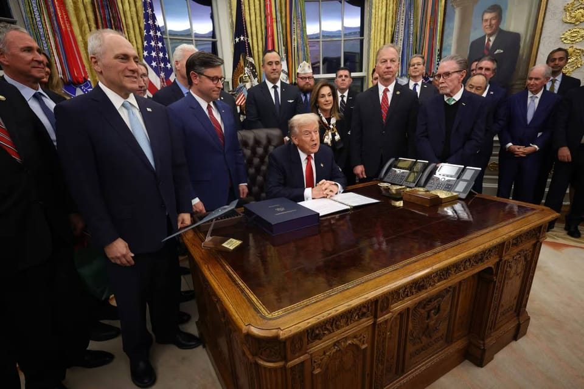

世界苦茶11月13日新闻 | 32条 | 中日继续围绕高市言论交锋

中日继续围绕高市言论交锋｜沈伯洋遭通缉引发关注 | 英国比特币洗钱案主犯获刑 | 证监会主席吴清突然辞职 | 欧洲将提前对中国小额包裹征税
苦茶数据
美元兑人民币：7.09（昨日7.12，前日7.12）
美元兑日元：154.45（昨日154.64，前日154.16）
上证指数：4029（昨日3995，前日4002)
标普500指数：6810（昨日6846，前日6832）
比特币：102956（昨日103389，前日103649）
布伦特原油：63.24（昨日64.94，前日64.48）
中国新闻
• 中日围绕高市“台湾有事”和薛剑“斩首”论持续交锋。
日本首相高市早苗的“台湾有事”和中国驻大坂总领事薛剑的“斩首”言论持续发酵。中国外交部称，如果日本武力介入台海局势，中国必迎头痛击；日本外交部长则强烈要求中国对薛剑言论采取适当措施。高市上周在国会答辩时称，如果“台湾有事”危及日本安全，可能被认定为“存亡危机事态”，日本自卫队可行使集体自卫权。薛剑随后在社媒发文说，高市把脖子伸到不该伸的地方，“那种肮脏的头就应该毫不犹豫斩掉”，引起舆论哗然。高市之后指她发言依照日本政府既有见解，“没有撤回或取消的打算”。中国外交部发言人林剑星期四在例行记者会上，批评高市公然发表涉台“露骨挑衅言论”，在中国严正交涉和强烈抗议后，还执迷不悟。
• 英国史上最大比特币洗钱案：中国主谋钱志敏获刑11年8个月。
英国最大规模比特币洗钱案当地时间星期二宣判，来自中国的主要犯罪嫌疑人钱志敏因洗钱罪被判处11年8个月监禁。据英国广播公司报道，伦敦萨瑟克刑事法庭法官黑尔斯宣判时说，钱志敏是这起犯罪从策划到实施的主导者，她的动机“纯粹出于贪婪”。47岁的钱志敏涉及中国天津的蓝天格锐特大非法集资案，在2014年至2017年期间，她主导了涉案金额430亿元人民币的非法集资案，中国31个省区市有逾12万8000名受害者蒙受财务损失。钱志敏在案发后将非法所得转换为6万1000枚比特币，持假护照潜逃英国，并通过购置房产等方式洗钱。英国警方2021年查获并冻结了她设备中的比特币。
• 分析人士表示，北京对台湾“二号人物”的演讲感到恼火，但可能会采取克制回应。
分析人士称，北京对台湾“第二号人物”在布鲁塞尔的演讲感到恼火，但可能会采取克制回应 在欧洲议会的非正式接触预计会促使大陆官员对政治噱头“更加警惕”。周五，萧在欧洲议会大楼内由跨议会中国联盟主办的活动上发表题为《台湾：动荡世界中的可信伙伴》的演讲。IPAC由来自43个国家及欧洲议会的议员组成，推动对北京采取强硬政策。萧在演讲中主张欧洲与台湾建立牢固伙伴关系，并强调台海和平的重要性。北京视台湾为中国领土的一部分，必要时会以武力实现统一。包括美国在内的大多数国家不承认台湾为独立国家，但华盛顿反对任何以武力夺取这座自我治理岛屿的企图，并致力于向其提供武器。
• 马云妻子以1950万英镑购入伦敦前意大利使馆。
阿里巴巴联合创始人马云的妻子张瑛，据报斥资1950万英镑，在伦敦购入一栋曾作为意大利大使馆的豪宅。《金融时报》引述英国土地注册处记录及知情人士披露这一消息。这栋豪宅最初挂牌时要价2150万英镑，最终在去年秋季易手。据负责该物业销售的一名房产中介称，买家被这处房产的“显赫地段”和“高级安保”吸引，但并未透露买家姓名。这栋联排别墅是英国二级保护历史建筑，曾在上世纪20年代用作意大利大使馆，也曾是意大利国防武官办公室所在地。销售资料显示，该物业面积7948平方英尺，后改建为住宅，配备影院、电梯及六间卧室。
印太新闻
• 沈伯洋遭陆通缉赖清德吁声援 韩国瑜：自己生病让别人吃药。
民进党籍的台湾立委沈伯洋遭中国大陆以从事分裂国家犯罪活动为由立案调查后，台湾总统赖清德喊话要国民党籍的立法院长韩国瑜表态。韩国瑜星期三受访时反酸赖清德“自己生病，让别人吃药”，并要他以民进党主席身分废除台独纲领、撤回大陆为境外敌对势力、重启两岸对话，才是真正解决问题的上流源头。重庆市公安局10月下旬发布警情通报，指沈伯洋从事分裂国家犯罪活动，决定依法追究刑事责任。大陆官媒央视新闻上星期六进一步发布约七分半钟的视频，介绍沈伯洋的个人背景和涉台独言行，并称可对他展开全球范围抓捕。大陆国务院台湾事务办公室发言人陈斌华星期三在例行记者会上被问及此案时说，这是落实惩治台独22条意见。
• 国民党主席郑丽文将兼任革实院长 重拾中心思想强化论述。
台湾在野的中国国民党主席郑丽文星期三主持上任后首次中常会，宣布将亲自兼任革命实践研究院院长，亲自为新进党员授课，重拾国民党中心思想，强化所有党员的论述能力。革命实践研究院为中国国民党中央委员会负责人才培育与干部培训的部门。在国民党史上，第一位党主席兼任革实院院长的是已故国民党总裁蒋中正，郑丽文是第二位。郑丽文上星期六出席位于台北市马场町“1950年代白色恐怖秋祭追思慰灵大会”，因“牺牲烈士”名单中包括被认定为共产党间谍的国防部参谋次长吴石，遭执政的民进党批判，党内同志也多不谅解。今年11月12日是国民党总理孙中山160周年诞辰纪念日。
• 日本电影界的象征仲代达矢去世，享年92岁。
日本电影界的象征、演员仲代达矢去世，享年92岁 以《乱》《天国与地狱》《切腹》等影片闻名的资深日本演员仲代达矢，于周六去世，享年92岁。他与日本一些最伟大导演的合作，奠定了他作为日本电影“黄金时代”偶像的地位。根据仲代创办的表演学校与剧团无名塾的声明，他因肺炎去世。仲代出身剧场演员，终生致力于舞台表演——部分原因是他不同于当时许多演员，拒绝与电影公司签订独家合约。这也使他能够自由接演不同角色——在武士史诗、现实主义剧作、犯罪惊悚甚至科幻片中尝试多种类型，并在职业生涯中与多位导演合作。
科技新闻
• 计算领域即将迎来一次翻天覆地的变革。
研制革命性药物，测试汽车新材料，模拟市场情景对银行的影响——这些任务即便借助最先进的计算机，也可能需要数月或数年才能完成。但如果这个时间可以缩短到几分钟或几小时呢？这就是量子计算所承诺的前景。量子计算是一个研究数十年的领域，近年来吸引了科技巨头和初创公司越来越多的关注与投资。周三，IBM 揭晓了其新的实验性 Loon 处理器和 Nighthawk 量子计算芯片，声称能比前代芯片执行更复杂的计算。过去两年，谷歌，微软及其他科技公司也相继发布了与量子有关的消息。麦肯锡公司预测，到 2035 年，量子计算可能为某些行业带来约 1.3 万亿美元的价值增长，这并非空穴来风。
• 议会中间派抨击冯德莱恩的数字改革草案。
布鲁塞尔——乌尔苏拉·冯德莱恩甚至还未公布她拟议的欧盟数字法律大修方案，欧洲议会就已发出信号：这不会通过。位于冯德莱恩所属中右翼欧洲人民党左侧的政治团体，公开反对一项揭示欧盟执委会意图放宽隐私规则、修订人工智能法并为业界利益重塑数据立法的数字一揽子草案。在致欧盟委员会的信中，中间至左翼的政治团体猛烈抨击这些草案，称其“极为令人担忧”，要求执委会“改变路线”，并指责其向美国要求作出让步。
• 马斯克对冯德莱恩：欧盟领导人应由人民选举产生。
科技巨头埃隆·马斯克周三对欧洲民主以及欧盟委员会主席发起了抨击。“如果民主是自由的基石，那么你作为欧盟领导者的职位难道不应该由人民直接选举产生吗？”马斯克在他拥有的社交媒体平台X上向乌尔苏拉·冯德莱恩发文问道。在另一条帖子中，这位特斯拉和SpaceX掌舵人补充称，“欧盟的领导人”应该由该集团的人民“选举产生”，而不是由一个委员会“任命”。
经济新闻
• 通用汽车要求供应商去除中国零部件 推动供应链外迁。
知情者透露，美国汽车巨头通用汽车已要求数千家供应商清除供应链中来自中国的零部件，反映出汽车制造商对地缘政治干扰运营的担忧日益加深。知情者指出，通用汽车高层一直敦促供应商寻找中国以外的原材料和零部件替代方案，目标是将供应链彻底迁出中国。通用汽车还对部分供应商设定期限，要求他们在2027年前结束与中国的采购关系。通用汽车去年底曾向部分供应商下达类似指令，而在今年春季中美贸易摩擦升级初期，紧急重新启动这项计划。知情者称，此举是公司提升供应链韧性的更广泛战略之一。随着中美关系持续紧张，汽车制造商今年普遍进入风险防范状态。中国长期以来是全球汽车产业的重要零部件与原材料来源。
• 中国吁德国促荷兰撤销接管安世半导体。
中国呼吁德国发挥积极作用，敦促荷兰政府撤销对安世半导体的接管。受访学者指出，荷兰政府接下来将陷入两难，一方面将面临来自中国及第三方国家的压力，但若轻易调整立场又可能损害政府信誉。根据中国商务部官网消息，中国商务部长王文涛星期二应约与德国联邦经济与能源部部长赖歇视频会谈，就中德、中欧经贸相关问题交换意见。王文涛在会谈中重申北京立场，强调安世半导体问题的根源，是“荷兰政府不当干预企业内部事务，造成全球半导体供应链动荡和混乱的责任在于荷方”。他希望德国发挥积极作用，敦促荷兰政府尽快采取实际行动，纠正错误做法，撤销相关措施。路透社报道，德国经济与能源部表示，不会就中荷双边会谈发表评论。
• 中美贸易休战仅两周后 中国对美大豆采购停滞。
中美元首在韩国釜山会晤达成临时贸易休战协议不到两周，中国对美国大豆的采购步伐似乎已陷入停滞。彭博社引述不愿具名的交易商透露，中国上月底集中采购本季首批美国大豆后，他们没有再掌握任何两国之间新的大豆发运信息。中美元首10月底举行会晤后，美国白宫11月初发布清单，称两国元首达成历史性经贸协议。其中，中国将在今年最后两个月购买至少1200万吨美国大豆，在未来三年每年购买至少2500万吨美国大豆。新加坡StoneX农业经纪人张康伟说，业内普遍认为，北京承诺采购1200万吨美国大豆更多是外交姿态。中国买家过去几个月大量采购南美大豆，以实现来源多样化。
• 传证监会主席吴清请辞后 官方发外访信息疑“辟谣”。
去年刚上任的中国证券监督管理委员会主席吴清，星期四突然传出请辞的消息。中国官方随后同日发布吴清以证监会主席身分外访的行程照片，疑似“辟谣”。路透社星期四引述知情者报道，吴清以健康问题为由向有关部门表达辞职意愿，并指吴清突然请辞令人意外，目前尚不清楚是否获批，以及他何时正式离任，引起中国舆论关注。中国证监会官网当晚发文称，当地时间11月10日至13日，吴清以证监会主席身份，访问法国和巴西的金融监管部门，并与国际机构投资者代表座谈，并配有两张吴清在访问行程中与他人的合照，被中国网民认为是在“间接辟谣”。吴清在2024年2月出任中国证监会主席，中国股市当时处于五年来的低位附近。
• 美国要求台湾投资 金额介于3500亿至5500亿美元之间。
台湾和美国的关税谈判传出新进展。据美国媒体报道，美国要求台湾承诺数千亿美元规模的投资，金额介于韩国的3500亿美元与日本的5500亿美元之间。据美国新闻网站Politico星期三报道，尽管美国最高法院有可能推翻目前对台湾输美商品征收的20%关税，台湾仍在继续推动与美国达成贸易协议。这是因为台北方面更担心美国商务部一项仍在进行的调查，可能会依据另一项法律授权，对台湾在全球占据主导地位的半导体产业征收新的关税。特朗普政府和台湾方面目前正就协议中的一项条款磋商，有关条款要求台湾在美国投资，内容是参照特朗普政府此前与韩国和日本达成的类似承诺。
• “德国可能浪费万亿欧元债务带来的增长机遇”。
德国顶尖经济顾问机构警告称，总理弗里德里希•默茨可能搞砸由债务融资的1万亿欧元投资计划，而德国经济将只能从已持续四年多的停滞中缓慢复苏。为政府提供独立建议的德国经济专家委员会对柏林方面的支出计划做出不客气的评估，称德国国内生产总值增速将从今年的0.2%小幅加快至2026年的0.9%，低于政府预测的1.3%。由五名学术界经济学家组成的这个专家小组警告称，默茨的财政支出计划——旨在加强国防和基础设施建设——在实施上需要“显着改进”；按照目前的计划，“大量资金正在取代常规预算支出”。
• 中国以承诺增加投资和贸易拉拢北爱尔兰。
在一场新的北爱尔兰贸易论坛上，中国展开拉拢攻势，北京驻英国首席外交官承诺将带来更多投资并提供进入世界第二大经济体巨大消费市场的机会。“中国是北爱尔兰第二大进口来源地，也是第十二大出口市场。我们希望看到双方贸易关系更加平衡，”中国驻英国大使郑泽光在贝尔法斯特举行的活动开幕致辞中表示，“因此我们鼓励更多投资流向这里。这也是为什么今天有超过100位中国商界领袖出席的原因。”中国—英国商务委员会的数据显示，北爱尔兰目前在英国各地区中对中国的贸易逆差最大，2024年其自中国进口额同比增长14.67%至10亿英镑，而对中国的出口则下降14.7%至1.45亿英镑。尽管如此。
• 中国通过承诺扩大投资和贸易拉拢北爱尔兰。
中国在一场新的北爱尔兰贸易论坛上展开拉拢，承诺增加投资和贸易 北京在周二的一场北爱尔兰新贸易论坛上展开“魅力攻势”，中国驻英国最高外交官承诺带来新的投资机会，并提供进入世界第二大经济体庞大消费市场的途径。“中国是北爱尔兰第二大进口来源国和第十二大出口市场。我们希望看到双方贸易关系更加平衡，”中国驻英国大使郑泽光在贝尔法斯特——北爱尔兰首府——的开幕致辞中表示。“因此我们鼓励更多投资流向这里。这也是为什么你们今天能看到百余位中国商界领袖出席的原因。” 根据中英商务协会的数据，北爱尔兰目前与中国的贸易逆差是英国各地区中最大的——2024年其自中国的进口同比增长14.67%，达10亿英镑。
• 尽管不确定因素增多，中国企业在欧盟的表现仍然稳健。
尽管不确定性增加，欧盟内的中国企业仍报告表现稳健 但企业调查警告称“商业问题政治化”构成威胁，布鲁塞尔正寻求降低供应链风险 根据中国欧盟商会周三与咨询公司罗兰贝格联合发布的报告，超过80%的受访企业表示其在2024年于欧洲的表现保持稳定或有所改善，超过一半实现营收增长，40%实现利润上升。CCCEU主席刘建东表示，中欧经贸关系正从“互补性相互依存”演变为“战略性共同塑造”。他指出，欧洲对中国企业已不再只是一个出口目的地，而是成为“技术创新枢纽、全球品牌试验场以及标准协调的重要舞台”。报告称，去年中国对欧洲的投资大幅增长，且越来越集中于东欧市场，尤其是匈牙利。
• 欧盟计划提前对中国小额包裹征税。
欧盟方面呼吁在2026年初对从希音、Temu和阿里巴巴等平台在线订购的小额包裹征收全欧盟范围的税费，这比原计划提前了两年多，旨在打击每年数十亿件从中国进口的廉价商品。欧盟委员会敦促周四召开会议的欧盟国家财长们同意加快实施该项税费，以保护欧盟零售商免受不公平竞争的冲击。欧盟贸易专员谢夫乔维奇在致各国财长的一封信中写道：“这是确保欧盟在瞬息万变的贸易形势下巩固自身地位的关键一步。此举将释放强烈信号，表明欧洲认真致力于提升自身竞争力，并确保企业拥有公平经营环境。”欧盟各国政府需要就新的时间表达成一致，并就征收的每件包裹固定关税进行谈判。
俄乌战争
• 俄罗斯、哈萨克斯坦签署战略伙伴关系宣言。
俄罗斯总统弗拉基米尔·普京与哈萨克斯坦总统卡西姆-若马尔特·托卡耶夫于11月12日签署了一项关于“全面战略伙伴关系与联盟”的宣言，俄罗斯国营媒体报道。托卡耶夫称，此次在莫斯科签署的文件将“开启双边关系的新纪元”。该宣言侧重于在安全，能源和贸易领域的合作。克里姆林宫此前表示，两国领导人的会谈将涉及能源问题以及美国对俄罗斯石油公司实施制裁的影响。上周在华盛顿会见托卡耶夫的美国总统唐纳德·特朗普对俄罗斯石油巨头俄石油和卢克石油实施了制裁，以推动莫斯科在乌克兰问题上停火。作为与俄罗斯接壤的中亚国家，哈萨克斯坦在战争中保持中立，一方面维持与莫斯科的传统伙伴关系。
• 乌克兰外长会见鲁比奥及其他七国集团伙伴，敦促提供防务和能源支持。
乌克兰外长与鲁比奥及其他七国集团伙伴会面，推动防务和能源支持 乌克兰外长安德烈·西比哈11月12日在加拿大与七国集团高级外交官会面，讨论在俄方攻势加剧之际对乌克兰的支持。此次在安大略省的会晤正值莫斯科对乌克兰能源电网发动无人机和导弹密集袭击，同时其部队在南部的扎波罗热州推进并进入东部重要城镇波克罗夫斯克。美国国务卿马尔科·鲁比奥参加了会议并与西比哈会谈，西比哈赞扬了美国总统唐纳德·特朗普“推动和平的努力以及对俄罗斯非常有效的能源制裁”。上个月，特朗普首次对俄罗斯石油公司俄罗斯石油和卢科伊尔实施制裁，正值与俄罗斯总统弗拉基米尔·普京的峰会筹备破裂之后不久。
• 乌克兰司法部长涉嫌腐败遭停职调查。
政治乌克兰 乌克兰司法部长涉嫌腐败遭停职调查 2025年11月12日乌克兰总理宣布，该国司法部长因涉嫌腐败已被停职，乌克兰能源部门正面临广泛的反腐败调查。广告 乌克兰总理尤利娅·斯维里登科表示，乌克兰内阁在当天的会议上决定，解除司法部长格尔曼·加卢申科的职务，原因是其涉嫌腐败。斯维里登科补充说，欧洲一体化事务副部长柳德米拉·苏加克将代理司法部长职务。在今年7月份政府改组之前，加卢申科担任能源部长达四年时间。反腐败特别检察官办公室 表示，加卢申科从被指操控大规模腐败网络的一名人士那里获得了“个人利益”。法新社报道称，这名人士是与乌克兰总统泽连斯基有私交的一名企业家。
• 俄罗斯追加30名日本人为无限期禁止入境人员。
俄罗斯追加30名日本人为无限期禁止入境人员，对象包括日本外务省报道官北村俊博，东京大学准教授小泉悠等学术界人士，还有媒体人士等。
• 俄罗斯军方宣布正式组建无人系统部队。
当地时间11月12日，新成立的俄罗斯武装部队无人系统部队副司令谢尔盖·伊什图加诺夫表示，该部队已正式组建。伊什图加诺夫说道，无人系统部队已经组建了正规的团、营和其他单位，其作战行动是按照统一计划进行的，并与其他部队群的单位协调行动。使用的装备除无人机外，还包括地面无人系统和无人舰艇。与此同时，仍在不断扩充现有的无人系统部队，并组建新的部队，并正在为这些部队配备操作员、工程师、技术人员和其他后勤保障人员。建立一所专门为无人系统部队设立的高等军事院校的工作已经在进行中。
世界新闻
• 法官示意，在芝加哥移民打击行动中被拘留的数百人可能获准保释。
法官暗示在芝加哥移民打击行动中被拘押的数百人可能获保释 芝加哥——周三，一位联邦法官在庭审中表示，在特朗普政府时期的移民打击行动中在芝加哥地区被逮捕并拘押的数百人可能很快获准保释，在等待移民听证期间获释。美国地方法官杰弗里·卡明斯在芝加哥的一次听证会上表示，他将根据一项2022年达成的同意令下令完全释放13名被拘押者，该同意令规定了美国移民及海关执法局在所谓无令逮捕方面的做法。他还要求政府律师在周五前审查一份全国县监狱和联邦设施中被拘押的615人的名单，查明他们是否符合同意令下的替代拘押措施，例如在移民案件进行期间使用脚镣式电子监控器。法官表示，他将于下周发布释放令。
• 加州吊销了1.7万张驾照，但州政府否认这是出于移民问题的考量。
加利福尼亚撤销1.7万移民的商用驾照 加利福尼亚撤销1.7万移民的商用驾照 加利福尼亚州官员周三表示，该州计划撤销发给移民的1.7万本商用驾照，此前发现这些驾照的到期日已超过持证人在美国合法居留的期限。这一声明是在特朗普政府严厉批评加州和其他州向非法居留者发放驾照之后作出的。该问题在八月份进入公众视野：一名未获授权在美的卡车司机在佛罗里达非法掉头导致车祸，造成三人死亡。交通部长肖恩·达菲周三表示，加州撤销这些驾照的做法等于承认该州此前虽为其许可标准辩护，但行为不当。在达菲提出关切后，加州启动了对其发放的商用驾照的审查。
• 总理联盟在伊拉克选举中表现强劲，但没有任何单一阵营占据主导。
伊拉克选举官员周三公布了议会选举初步结果，显示传统势力在各自地区仍保持主导地位，同时也出现一些意外。由总理穆罕默德·肖亚·苏达尼领导的“重建与变革”联盟在18个省中赢得了8个省的最多席位，包括巴格达，纳杰夫，卡迪西耶，卡尔巴拉，穆坦纳，迈桑，迪卡尔和巴比尔。尽管苏达尼的阵营表现强劲，但没有任何单一阵营取得足以独自组建政府的压倒性胜利，这意味着下届政府的组建将需要各强势阵营之间进行谈判和达成多数联盟。伊拉克过去几次选举中，获得最多席位的阵营未必能推举其首选人就任，这包括2021年上次议会选举时，由有影响力的什叶派牧师穆克塔达·萨德尔领导的萨德尔运动虽获最多席位。
• 法国议会投票决定暂停马克龙备受争议的养老金改革。
法国国民议会周三投票决定在2027年总统选举前暂停争议性的2023年退休年龄法案——将大多数工人的退休年龄从62岁提高到64岁。该表决以255票对146票通过。支持者包括社会党和绿党等左翼议员以及极右的国民联盟；反对者包括极左的“法国不屈服”运动、右翼共和党和中右的Horizons党。法国总统埃马纽埃尔·马克龙所属的中间派大多数议员弃权。总理塞巴斯蒂安·勒科尔努上月提出这一暂停方案，作为确保政府存续的折衷之策。劳动与团结部长让-皮埃尔·法朗杜周三表示，政府预计该措施将在2026年花费约3亿欧元，2027年约19亿欧元。
• 爱泼斯坦称特朗普对他的性犯罪知情，还曾与受害者在他家中待了好几个小时。
据纽约时报报道，美国众议院民主党人周三公布了一组电邮记录，其中已死亡的性犯罪大亨杰弗里·爱泼斯坦曾写道，特朗普“曾和受害者之一一起在我家里待了好几个小时”。其他邮件内容也显示，爱泼斯坦认为特朗普对他的性侵行为知情程度超过他公开承认的。特朗普坚决否认与爱泼斯坦的性交易网络有任何关系或知情。他曾表示，自己曾与爱泼斯坦关系友好，但后来决裂。爱泼斯坦于2019年在联邦监狱中自杀身亡。然而，众议院监督委员会的民主党人表示，这些电邮是委员会从爱泼斯坦遗产获得的数千页文件中筛选出来的，内容令外界再次质疑特朗普与爱泼斯坦的关系。在一封邮件中，爱泼斯坦直言不讳地表示，特朗普“知道那些女孩”的情况。
• 南非总统称，特朗普决定让美国抵制G20峰会是“他们的损失”。
美国总统唐纳德·特朗普决定美国政府抵制下周在南非举行的二十国集团峰会是“他们的损失”，南非总统称 南非开普敦——南非总统西里尔·拉马福萨周三表示，美国总统唐纳德·特朗普决定美国政府抵制下周在南非举行的二十国集团领导人峰会是“他们的损失”。拉马福萨补充说，“美国需要重新考虑抵制政治是否真的奏效，因为以我的经验看，它并不起作用。” 特朗普上周在社交媒体上宣布，11月22日至23日在约翰内斯堡举行的由19个最富有国家和主要发展中国家领导人参加的会议，美国不会派政府官员出席。他在声明中援引了那些被广泛驳斥的说法，称南非的白人少数群体正遭受暴力迫害，他们的土地因种族原因被夺走。
• 患有肥胖、糖尿病及其他健康问题的移民可能会被拒发签证。
移民若患肥胖、糖尿病及其他健康问题 可能被拒发签证 寻求到美国居住签证的外国人，如果患有包括糖尿病或肥胖在内的某些疾病，可能会被拒绝发放签证——这是特朗普政府上周发布的一项指令所规定的。该指令以电报形式由国务院下发给驻外大使馆和领事馆官员，并被KFF Health News审阅。电报要求签证官将申请人视为不具备入境资格的若干新增理由之一，其中包括年龄或可能依赖公共救助的可能性。该指令称，这类人因健康问题或年龄原因可能成为“公共负担”——即对美国资源的潜在消耗。长期以来，评估潜在移民的健康状况一直是签证申请程序的一部分，包括筛查结核等传染病以及获取疫苗接种记录。